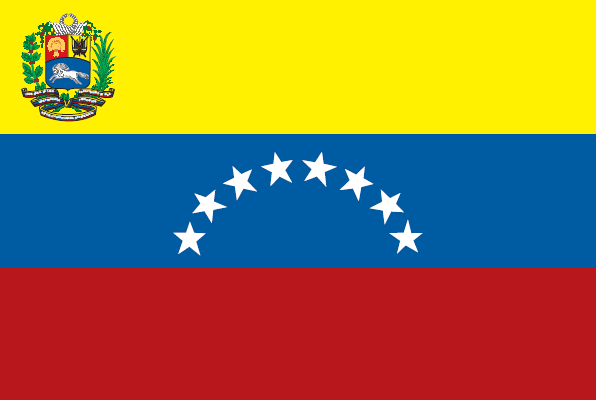
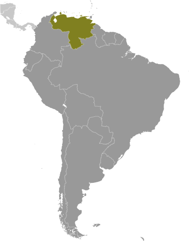

South America :: VENEZUELA
Introduction :: VENEZUELA
-
Venezuela was one of three countries that emerged from the collapse of Gran Colombia in 1830 (the others being Ecuador and New Granada, which became Colombia). For most of the first half of the 20th century, Venezuela was ruled by generally benevolent military strongmen who promoted the oil industry and allowed for some social reforms. Democratically elected governments have held sway since 1959. Under Hugo CHAVEZ, president from 1999 to 2013, and his hand-picked successor, President Nicolas MADURO, the executive branch has exercised increasingly authoritarian control over other branches of government. At the same time, democratic institutions have deteriorated, freedoms of expression and the press have been curtailed, and political polarization has grown. The ruling party's economic policies have expanded the state's role in the economy through expropriations of major enterprises, strict currency exchange and price controls that discourage private sector investment and production, and overdependence on the petroleum industry for revenues, among others. Current concerns include: human rights abuses, rampant violent crime, high inflation, and widespread shortages of basic consumer goods, medicine, and medical supplies.
Geography :: VENEZUELA
-
Northern South America, bordering the Caribbean Sea and the North Atlantic Ocean, between Colombia and Guyana8 00 N, 66 00 WSouth Americatotal: 912,050 sq kmland: 882,050 sq kmwater: 30,000 sq kmcountry comparison to the world: 34almost six times the size of Georgia; slightly more than twice the size of Californiatotal: 5,267 kmborder countries (3): Brazil 2,137 km, Colombia 2,341 km, Guyana 789 km2,800 kmterritorial sea: 12 nmcontiguous zone: 15 nmexclusive economic zone: 200 nmcontinental shelf: 200-m depth or to the depth of exploitationtropical; hot, humid; more moderate in highlandsAndes Mountains and Maracaibo Lowlands in northwest; central plains (llanos); Guiana Highlands in southeastmean elevation: 450 melevation extremes: lowest point: Caribbean Sea 0 mhighest point: Pico Bolivar 4,978 mpetroleum, natural gas, iron ore, gold, bauxite, other minerals, hydropower, diamondsagricultural land: 24.5%arable land 3.1%; permanent crops 0.8%; permanent pasture 20.6%forest: 52.1%other: 23.4% (2011 est.)10,550 sq km (2012)most of the population is concentrated in the northern and western highlands along an eastern spur at the northern end of the Andes, an area that includes the capital of Caracassubject to floods, rockslides, mudslides; periodic droughtssewage pollution of Lago de Valencia; oil and urban pollution of Lago de Maracaibo; deforestation; soil degradation; urban and industrial pollution, especially along the Caribbean coast; threat to the rainforest ecosystem from irresponsible mining operationsparty to: Antarctic Treaty, Biodiversity, Climate Change, Climate Change-Kyoto Protocol, Desertification, Endangered Species, Hazardous Wastes, Marine Life Conservation, Ozone Layer Protection, Ship Pollution, Tropical Timber 83, Tropical Timber 94, Wetlandssigned but not ratified:: none of the selected agreementson major sea and air routes linking North and South America; Angel Falls in the Guiana Highlands is the world's highest waterfall (979 m)
People and Society :: VENEZUELA
-
31,304,016 (July 2017 est.)country comparison to the world: 42noun: Venezuelan(s)adjective: VenezuelanSpanish, Italian, Portuguese, Arab, German, African, indigenous peopleSpanish (official), numerous indigenous dialectsnominally Roman Catholic 96%, Protestant 2%, other 2%Social investment in Venezuela during the CHAVEZ administration reduced poverty from nearly 50% in 1999 to about 27% in 2011, increased school enrollment, substantially decreased infant and child mortality, and improved access to potable water and sanitation through social investment. "Missions" dedicated to education, nutrition, healthcare, and sanitation were funded through petroleum revenues. The sustainability of this progress remains questionable, however, as the continuation of these social programs depends on the prosperity of Venezuela's oil industry. In the long-term, education and health care spending may increase economic growth and reduce income inequality, but rising costs and the staffing of new health care jobs with foreigners are slowing development.While CHAVEZ was in power, more than one million predominantly middle- and upper-class Venezuelans are estimated to have emigrated. The brain drain is attributed to a repressive political system, lack of economic opportunities, steep inflation, a high crime rate, and corruption. Thousands of oil engineers emigrated to Canada, Colombia, and the United States following CHAVEZ's firing of over 20,000 employees of the state-owned petroleum company during a 2002-03 oil strike. Additionally, thousands of Venezuelans of European descent have taken up residence in their ancestral homelands. Nevertheless, Venezuela has attracted hundreds of thousands of immigrants from South America and southern Europe because of its lenient migration policy and the availability of education and health care. Venezuela also has been a fairly accommodating host to Colombian refugees, numbering about 170,000 as of year-end 2016. However, since 2014, falling oil prices have driven a major economic crisis that has pushed Venezuelans from all walks of life to migrate or to seek asylum abroad to escape severe shortages of food, water, and medicine; soaring inflation; unemployment; and violence. Tens of thousands of Venezuelans have migrated, often illegally, to Colombia, Brazil, Mexico, Panama, Chile, Guyana, the Dominican Republic, or taken perilous journeys by raft to Aruba and Curacao. Asylum applications increased significantly in the US and Brazil in 2016 and 2017. Although several receiving countries are making efforts to increase immigration restrictions and to deport illegal Venezuelan migrants, Venezuelans continue to migrate to avoid economic collapse at home.0-14 years: 27.36% (male 4,390,773/female 4,175,080)15-24 years: 17.03% (male 2,707,934/female 2,624,031)25-54 years: 40.53% (male 6,289,673/female 6,398,217)55-64 years: 7.98% (male 1,198,525/female 1,299,498)65 years and over: 7.09% (male 1,003,534/female 1,216,751) (2017 est.)total dependency ratio: 52.6youth dependency ratio: 43elderly dependency ratio: 9.5potential support ratio: 10.5 (2015 est.)total: 28.3 yearsmale: 27.6 yearsfemale: 29 years (2017 est.)country comparison to the world: 1321.24% (2017 est.)country comparison to the world: 9618.8 births/1,000 population (2017 est.)country comparison to the world: 905.3 deaths/1,000 population (2017 est.)country comparison to the world: 185-1.2 migrant(s)/1,000 population (2017 est.)country comparison to the world: 144most of the population is concentrated in the northern and western highlands along an eastern spur at the northern end of the Andes, an area that includes the capital of Caracasurban population: 89.1% of total population (2017)rate of urbanization: 1.38% annual rate of change (2015-20 est.)CARACAS (capital) 2.916 million; Maracaibo 2.196 million; Valencia 1.734 million; Maracay 1.166 million; Barquisimeto 1.039 million (2015)at birth: 1.05 male(s)/female0-14 years: 1.05 male(s)/female15-24 years: 1.03 male(s)/female25-54 years: 0.98 male(s)/female55-64 years: 0.92 male(s)/female65 years and over: 0.79 male(s)/femaletotal population: 0.99 male(s)/female (2016 est.)95 deaths/100,000 live births (2015 est.)country comparison to the world: 73total: 12.2 deaths/1,000 live birthsmale: 12.8 deaths/1,000 live birthsfemale: 11.6 deaths/1,000 live births (2017 est.)country comparison to the world: 117total population: 76 yearsmale: 73 yearsfemale: 79.1 years (2017 est.)country comparison to the world: 922.32 children born/woman (2017 est.)country comparison to the world: 8875% (2010)5.3% of GDP (2014)country comparison to the world: 1320.9 beds/1,000 population (2011)improved:urban: 95% of populationrural: 77.9% of populationtotal: 93.1% of populationunimproved:urban: 5% of populationrural: 22.1% of populationtotal: 6.9% of population (2015 est.)improved:urban: 97.5% of populationrural: 69.9% of populationtotal: 94.4% of populationunimproved:urban: 2.5% of populationrural: 30.1% of populationtotal: 5.6% of population (2015 est.)0.6% (2016 est.)country comparison to the world: 55120,000 (2016 est.)country comparison to the world: 392,500 (2016 est.)country comparison to the world: 47degree of risk: highfood or waterborne diseases: bacterial diarrhea and hepatitis Avectorborne diseases: dengue fever and malarianote: active local transmission of Zika virus by Aedes species mosquitoes has been identified in this country (as of August 2016); it poses an important risk (a large number of cases possible) among US citizens if bitten by an infective mosquito; other less common ways to get Zika are through sex, via blood transfusion, or during pregnancy, in which the pregnant woman passes Zika virus to her fetus (2016)25.6% (2016)country comparison to the world: 502.9% (2009)country comparison to the world: 1156.9% of GDP (2009)country comparison to the world: 22definition: age 15 and over can read and writetotal population: 97.1%male: 97%female: 97.2% (2016 est.)total: 14 yearsmale: NAfemale: NA (2009)total: 14.6%male: NAfemale: NA (2015 est.)country comparison to the world: 70
Government :: VENEZUELA
-
conventional long form: Bolivarian Republic of Venezuelaconventional short form: Venezuelalocal long form: Republica Bolivariana de Venezuelalocal short form: Venezuelaetymology: native stilt-houses built on Lake Maracaibo reminded early explorers Alonso de OJEDA and Amerigo VESPUCCI in 1499 of buildings in Venice and so they named the region "Venezuola," which in Italian means "Little Venice"federal presidential republicname: Caracasgeographic coordinates: 10 29 N, 66 52 Wtime difference: UTC-4 (1 hour ahead of Washington, DC, during Standard Time)23 states (estados, singular - estado), 1 capital district* (distrito capital), and 1 federal dependency** (dependencia federal); Amazonas, Anzoategui, Apure, Aragua, Barinas, Bolivar, Carabobo, Cojedes, Delta Amacuro, Dependencias Federales (Federal Dependencies)**, Distrito Capital (Capital District)*, Falcon, Guarico, Lara, Merida, Miranda, Monagas, Nueva Esparta, Portuguesa, Sucre, Tachira, Trujillo, Vargas, Yaracuy, Zulianote: the federal dependency consists of 11 federally controlled island groups with a total of 72 individual islands5 July 1811 (from Spain)Independence Day, 5 July (1811)many previous; latest adopted 15 December 1999, effective 30 December 1999; amended 2009 (2016)civil law system based on the Spanish civil codehas not submitted an ICJ jurisdiction declaration; accepts ICCt jurisdictioncitizenship by birth: yescitizenship by descent: yesdual citizenship recognized: noresidency requirement for naturalization: 5 years18 years of age; universalchief of state: President Nicolas MADURO Moros (since 19 April 2013); Executive Vice President Tareck EL AISSAMI (since 4 January 2017); note - the president is both chief of state and head of governmenthead of government: President Nicolas MADURO Moros (since 19 April 2013); Executive Vice President Tareck EL AISSAMI (since 4 January 2017)cabinet: Council of Ministers appointed by the presidentelections/appointments: president directly elected by simple majority popular vote for a 6-year term (no term limits); election last held on 14 April 2013 - a special election held following the death of President Hugo CHAVEZ Frias on 5 March 2013 (next election expected in late 2018 or early 2019 pending official convocation by the country's electoral body)election results: Nicolas MADURO Moros elected president; percent of vote - Nicolas MADURO Moros (PSUV) 50.6%, Henrique CAPRILES Radonski (PJ) 49.1%, other 0.3%description: unicameral National Assembly or Asamblea Nacional (167 seats; 113 members directly elected in single- and multi-seat constituencies by simple majority vote, 51 directly elected in multi-seat constituencies by proportional representation vote, and 3 seats reserved for indigenous peoples of Venezuela; members serve 5-year terms)elections: last held on 6 December 2015 (next expected to be held in 2020)election results: percent of vote by party - MUD (opposition coalition) 56.2%, PSUV (pro-government) 40.9%, other 2.9%; seats by party - MUD 109, PSUV 55, indigenous peoples 3note: amid months of protests and clashes beginning in latter 2016, President MADURO issued a decree to hold an election to form a Constituent Assembly; the 30 July 2017 poll approved the formation of a 545-member Constituent Assembly, which is empowered to change the constitution and dismiss government institutions and officialshighest court(s): Supreme Tribunal of Justice (consists of 32 judges organized into 6 divisions - constitutional, political administrative, electoral, civil appeals, criminal appeals, and social (mainly agrarian and labor issues)judge selection and term of office: judges proposed by the Committee of Judicial Postulation (an independent body of organizations dealing with legal issues and of the organs of citizen power) and appointed by the National Assembly; judges serve nonrenewable 12-year termssubordinate courts: Superior or Appeals Courts (Tribunales Superiores); District Tribunals (Tribunales de Distrito); Courts of First Instance (Tribunales de Primera Instancia); Parish Courts (Tribunales de Parroquia); Justices of the Peace (Justicia de Paz) NetworkA New Time or UNT [Manuel ROSALES]Brave People's Alliance or ABP [Richard BLANCO]Christian Democrats or COPEI [Roberto ENRIQUEZ]Coalition of opposition parties -- The Democratic Unity Table or MUD [Jose Luis CARTAYA]Communist Party of Venezuela or PCV [Oscar FIGUERA]Democratic Action or AD [Henry RAMOS ALLUP]Fatherland for All or PPT [Rafael UZCATEGUI]For Social Democracy or PODEMOS [Didalco Antonio BOLIVAR GRATEROL]Justice First or PJ [Julio BORGES]Movement Toward Socialism or MAS [Segundo MELENDEZ]Popular Will or VP [Leopoldo LOPEZ]Progressive Wave or AP [Henri FALCON]The Radical Cause or La Causa R [Americo DE GRAZIA]United Socialist Party of Venezuela or PSUV [Nicolas MADURO]Venezuelan Progressive Movement or MPV [Simon CALZADILLA]Venezuela Project or PV [Henrique Fernando SALAS FEO]Bolivarian and Socialist Workers' Union (a ruling-party-oriented organized labor union)Confederacion Venezolana de Industriales or Coindustria (a conservative business group)Consejos Comunales (pro-government local communal councils)Federation of Chambers and Associations of Commerce and Production of Venezuela or FEDECAMARAS (a conservative business group)Union of Oil Workers of Venezuela or FUTPVVenezuelan Confederation of Workers or CTV (opposition-oriented labor organization)other: various civil society groups and human rights organizationsCaricom (observer), CD, CDB, CELAC, FAO, G-15, G-24, G-77, IADB, IAEA, IBRD, ICAO, ICC (national committees), ICCt (signatory), ICRM, IDA, IFAD, IFC, IFRCS, IHO, ILO, IMF, IMO, IMSO, Interpol, IOC, IOM, IPU, ITSO, ITU, ITUC (NGOs), LAES, LAIA, LAS (observer), MIGA, NAM, OAS, OPANAL, OPCW, OPEC, PCA, Petrocaribe, UN, UNASUR, UNCTAD, UNESCO, UNHCR, UNIDO, Union Latina, UNWTO, UPU, WCO, WFTU (NGOs), WHO, WIPO, WMO, WTOchief of mission: Ambassador (vacant); Charge d'Affaires Carlos Julio RON Martinez (since February 2017)chancery: 1099 30th Street NW, Washington, DC 20007telephone: [1] (202) 342-2214FAX: [1] (202) 342-6820consulate(s) general: Boston, Chicago, Houston, New Orleans, New York, San Francisco, San Juan (Puerto Rico)chief of mission: Ambassador (vacant); Charge d'Affaires Lee MCCLENNY (July 2014)embassy: Calle F con Calle Suapure, Urbanizacion Colinas de Valle Arriba, Caracas 1080mailing address: P. O. Box 62291, Caracas 1060-A; APO AA 34037telephone: [58] (212) 975-6411, 907-8400 (after hours)FAX: [58] (212) 907-8199three equal horizontal bands of yellow (top), blue, and red with the coat of arms on the hoist side of the yellow band and an arc of eight white five-pointed stars centered in the blue band; the flag retains the three equal horizontal bands and three main colors of the banner of Gran Colombia, the South American republic that broke up in 1830; yellow is interpreted as standing for the riches of the land, blue for the courage of its people, and red for the blood shed in attaining independence; the seven stars on the original flag represented the seven provinces in Venezuela that united in the war of independence; in 2006, then President Hugo CHAVEZ ordered an eighth star added to the star arc - a decision that sparked much controversy - to conform with the flag proclaimed by Simon Bolivar in 1827 and to represent the historic province of Guayanatroupial (bird); national colors: yellow, blue, redname: "Gloria al bravo pueblo" (Glory to the Brave People)lyrics/music: Vicente SALIAS/Juan Jose LANDAETAnote: adopted 1881; lyrics written in 1810, the music some years later; both SALIAS and LANDAETA were executed in 1814 during Venezuela's struggle for independence
Economy :: VENEZUELA
-
Venezuela remains highly dependent on oil revenues, which account for almost all export earnings and nearly half of the government’s revenue. In 2016, GDP contracted 10%, inflation hit 720%, people faced widespread shortages of consumer goods, and central bank international reserves dwindled. On the other hand, Venezuela managed to pay down its external debt and narrow its current account deficit. Domestic production and industry continues to severely underperform and the Venezuelan government continues to rely on imports to meet its basic food and consumer goods needs.Falling oil prices since 2014 have aggravated Venezuela’s economic crisis. Insufficient access to dollars, price controls, and rigid labor regulations have led some US and multinational firms to reduce or shut down their Venezuelan operations. Market uncertainty and state oil company PDVSA’s poor cash flow have slowed investment in the petroleum sector, resulting in a decline in oil production.Under President Nicolas MADURO, the Venezuelan Government’s response to the economic crisis has been to increase state control over the economy and blame the private sector for the shortages. MADURO has ceded increasing authority for the production and distribution of scarce goods to the military and to local socialist party member committees. The Venezuelan Government has maintained strict currency controls since 2003. On 17 February 2016, the Venezuelan Government announced a change from three official currency exchange mechanisms to only two official rates for the sale of dollars to private-sector firms and individuals, with rates based on the government's import priorities. The official exchange rate used for food and medicine imports was devalued to 10 bolivars per dollar from 6.3 bolivars per dollar. The second rate moved to a managed float. These currency controls present significant obstacles to trade with Venezuela because importers cannot obtain sufficient dollars to purchase goods needed to maintain their operations. Meting out access to the multiple exchange rates has created opportunities for arbitrage and corruption. MADURO has used decree powers to enact legislation to deepen the state’s role as the primary buyer and distributor of imports, further tighten currency controls, cap business profits, and extend price controls.$434.9 billion (2016 est.)$514 billion (2015 est.)$542.2 billion (2014 est.)note: data are in 2016 dollarscountry comparison to the world: 46$236.4 billion (2016 est.)-16.5% (2016 est.)-6.2% (2015 est.)-3.9% (2014 est.)country comparison to the world: 224$14,000 (2016 est.)$17,000 (2015 est.)$18,400 (2014 est.)note: data are in 2016 dollarscountry comparison to the world: 1157.6% of GDP (2016 est.)31.8% of GDP (2015 est.)9.1% of GDP (2014 est.)country comparison to the world: 114household consumption: 71.9%government consumption: 16.2%investment in fixed capital: 17.3%investment in inventories: 1.9%exports of goods and services: 6.1%imports of goods and services: -13.3% (2016 est.)agriculture: 4%industry: 35.5%services: 60.6% (2016 est.)corn, sorghum, sugarcane, rice, bananas, vegetables, coffee; beef, pork, milk, eggs; fishagricultural products, livestock, raw materials, machinery and equipment, transport equipment, construction materials, medical equipment, pharmaceuticals, chemicals, iron and steel products, crude oil and petroleum products-8% (2016 est.)country comparison to the world: 19414.16 million (2016 est.)country comparison to the world: 41agriculture: 7.3%industry: 21.8%services: 70.9% (4th quarter, 2011)20.6% (2016 est.)6.8% (2015 est.)country comparison to the world: 17419.7% (2015 est.)lowest 10%: 1.7%highest 10%: 32.7% (2006)39 (2011)49.5 (1998)country comparison to the world: 68revenues: $98.81 billionexpenditures: $236.6 billion (2016 est.)34.4% of GDP (2016 est.)country comparison to the world: 58-48% of GDP (2016 est.)country comparison to the world: 21839.3% of GDP (2016 est.)50.6% of GDP (2015 est.)note: data cover central government debt, as well as the debt of state-owned oil company PDVSA; the data include treasury debt held by foreign entities; the data include some debt issued by subnational entities, as well as intra-governmental debt; intra-governmental debt consists of treasury borrowings from surpluses in the social funds, such as for retirement, medical care, and unemployment; some debt instruments for the social funds are sold at public auctionscountry comparison to the world: 135calendar year254.4% (2016 est.)121.7% (2015 est.)country comparison to the world: 22729.5% (2015)country comparison to the world: 120.78% (31 December 2016 est.)19.4% (31 December 2015 est.)country comparison to the world: 14$163.3 billion (31 December 2016 est.)$273.3 billion (31 December 2015 est.)country comparison to the world: 26$165.4 billion (31 December 2016 est.)$279.1 billion (31 December 2015 est.)country comparison to the world: 43$339.6 billion (31 December 2016 est.)$339 billion (31 December 2015 est.)country comparison to the world: 33$25.3 billion (31 December 2012 est.)$5.143 billion (31 December 2011 est.)$3.991 billion (31 December 2011 est.)country comparison to the world: 62$-3.87 billion (2016 est.)$-20.36 billion (2015 est.)country comparison to the world: 184$27.2 billion (2016 est.)$37.23 billion (2015 est.)country comparison to the world: 63petroleum and petroleum products, bauxite and aluminum, minerals, chemicals, agricultural productsUS 35.1%, India 17.2%, China 14.1%, Netherlands Antilles 8%, Singapore 5.3%, Cuba 4.1% (2016)$20.19 billion (2016 est.)$36.46 billion (2015 est.)country comparison to the world: 69agricultural products, livestock, raw materials, machinery and equipment, transport equipment, construction materials, medical equipment, petroleum products, pharmaceuticals, chemicals, iron and steel productsUS 22.1%, China 14.3%, Brazil 7.4%, Colombia 4.2% (2016)$10.99 billion (31 December 2016 est.)$16.37 billion (31 December 2015 est.)country comparison to the world: 71$109.8 billion (31 December 2016 est.)$123.7 billion (31 December 2015 est.)country comparison to the world: 48$33.78 billion (31 December 2016 est.)$32.18 billion (31 December 2015 est.)country comparison to the world: 65$31.12 billion (31 December 2016 est.)$30.04 billion (31 December 2015 est.)country comparison to the world: 50bolivars (VEB) per US dollar -48.07 (2016 est.)48.07 (2015 est.)13.72 (2014 est.)6.284 (2013 est.)4.29 (2012 est.)
Energy :: VENEZUELA
-
population without electricity: 100,000electrification - total population: 99.7%electrification - urban areas: 99.8%electrification - rural areas: 98.6% (2013)114.4 billion kWh (2015 est.)country comparison to the world: 3373.99 billion kWh (2015 est.)country comparison to the world: 390 kWh (2015 est.)country comparison to the world: 2120 kWh (2015 est.)country comparison to the world: 21532.17 million kW (2015 est.)country comparison to the world: 3352.8% of total installed capacity (2015 est.)country comparison to the world: 1450% of total installed capacity (2015 est.)country comparison to the world: 20447.1% of total installed capacity (2015 est.)country comparison to the world: 440.1% of total installed capacity (2015 est.)country comparison to the world: 1682.277 million bbl/day (2016 est.)country comparison to the world: 111.514 million bbl/day (2014 est.)country comparison to the world: 100 bbl/day (2014 est.)country comparison to the world: 206300.9 billion bbl (1 January 2017 es)country comparison to the world: 11.028 million bbl/day (2014 est.)country comparison to the world: 20747,000 bbl/day (2015 est.)country comparison to the world: 30402,300 bbl/day (2014 est.)country comparison to the world: 190 bbl/day (2014 est.)country comparison to the world: 21426 billion cu m (2015 est.)country comparison to the world: 2939.62 billion cu m (2015 est.)country comparison to the world: 330 cu m (2014 est.)country comparison to the world: 205500 million cu m (2015 est.)country comparison to the world: 675.701 trillion cu m (1 January 2017 es)country comparison to the world: 8188 million Mt (2013 est.)country comparison to the world: 31
Communications :: VENEZUELA
-
total subscriptions: 7,752,232subscriptions per 100 inhabitants: 25 (July 2016 est.)country comparison to the world: 23total: 27,600,893subscriptions per 100 inhabitants: 89 (July 2016 est.)country comparison to the world: 40general assessment: modern and expandingdomestic: two domestic satellite systems with three earth stations; recent substantial improvement in telephone service in rural areas; installation of a national interurban fiber-optic network capable of digital multimedia services; three major providers operate the mobile market; combined fixed-line and mobile-cellular telephone subscribership about 115 per 100 personsinternational: country code - 58; submarine cable systems provide connectivity to Cuba and the Caribbean, Central and South America, and US; satellite earth stations - 1 Intelsat (Atlantic Ocean) and 1 PanAmSat; participating with Colombia, Ecuador, Peru, and Bolivia in the construction of an international fiber-optic network (2016)government supervises a mixture of state-run and private broadcast media; 13 public service networks, 61 privately owned TV networks, a privately owned news channel with limited national coverage, and a government-backed Pan-American channel; state-run radio network includes roughly 65 news stations and another 30 stations targeted at specific audiences; state-sponsored community broadcasters include 235 radio stations and 44 TV stations; the number of private broadcast radio stations has been declining, but many still remain in operation (2014).vetotal: 18,547,381percent of population: 60.0% (July 2016 est.)country comparison to the world: 37
Transportation :: VENEZUELA
-
number of registered air carriers: 17inventory of registered aircraft operated by air carriers: 122annual passenger traffic on registered air carriers: 6,456,853annual freight traffic on registered air carriers: 6,204,085 mt-km (2015)YV (2016)444 (2013)country comparison to the world: 19total: 127over 3,047 m: 62,438 to 3,047 m: 91,524 to 2,437 m: 33914 to 1,523 m: 62under 914 m: 17 (2013)total: 3172,438 to 3,047 m: 31,524 to 2,437 m: 57914 to 1,523 m: 127under 914 m: 130 (2013)3 (2013)extra heavy crude 981 km; gas 5,941 km; oil 7,588 km; refined products 1,778 km (2013)total: 447 kmstandard gauge: 447 km 1.435-m gauge (41.4 km electrified) (2014)country comparison to the world: 117total: 96,189 km (2014)country comparison to the world: 507,100 km (Orinoco River (400 km) and Lake de Maracaibo navigable by oceangoing vessels) (2011)country comparison to the world: 20total: 53by type: bulk carrier 4, cargo 12, chemical tanker 1, liquefied gas 5, passenger 1, passenger/cargo 14, petroleum tanker 16foreign-owned: 9 (Denmark 1, Estonia 1, Germany 1, Greece 4, Mexico 1, Spain 1)registered in other countries: 14 (Panama 13, Saint Vincent and the Grenadines 1) (2010)country comparison to the world: 70major seaport(s): La Guaira, Maracaibo, Puerto Cabello, Punta Cardonoil terminal(s): Jose terminal
Military and Security :: VENEZUELA
-
1% of GDP (2015)1.16% of GDP (2014)1.43% of GDP (2013)1.3% of GDP (2012)0.75% of GDP (2011)country comparison to the world: 98Bolivarian National Armed Forces (Fuerza Armada Nacional Bolivariana, FANB): Bolivarian Army (Ejercito Bolivariano, EB), Bolivarian Navy (Armada Bolivariana, AB; includes Naval Infantry, Coast Guard, Naval Aviation), Bolivarian Military Aviation (Aviacion Militar Bolivariana, AMB; includes Air National Guard), Bolivarian National Guard (Guardia Nacional Bolivaria, GNB), Bolivarian Militia (Milicia Bolivariana, NMB) (2016)all citizens of military service age (18-60 years old) are obligated to register for military service, though mandatory recruitment is forbidden; the minimum service obligation is 12 months (2016)the International Maritime Bureau continues to report the territorial and offshore waters in the Caribbean Sea as at risk for piracy and armed robbery against ships; numerous vessels, including commercial shipping and pleasure craft, have been attacked and hijacked both at anchor and while underway; crews have been robbed and stores or cargoes stolen; in 2016, there were five attacks reported and this increased to six attacks in the first half of 2017 making Venezuela the fourth most dangerous area in the World
Transnational Issues :: VENEZUELA
-
claims all of the area west of the Essequibo River in Guyana, preventing any discussion of a maritime boundary; Guyana has expressed its intention to join Barbados in asserting claims before the UN Convention on the Law of the Sea that Trinidad and Tobago's maritime boundary with Venezuela extends into their waters; dispute with Colombia over maritime boundary and Venezuelan administered Los Monjes Islands near the Gulf of Venezuela; Colombian organized illegal narcotics and paramilitary activities penetrate Venezuela's shared border region; US, France, and the Netherlands recognize Venezuela's granting full effect to Aves Island, thereby claiming a Venezuelan Economic Exclusion Zone/continental shelf extending over a large portion of the eastern Caribbean Sea; Dominica, Saint Kitts and Nevis, Saint Lucia, and Saint Vincent and the Grenadines protest Venezuela's full effect claimrefugees (country of origin): 171,920 (Colombia) (2016)current situation: Venezuela is a source and destination country for men, women, and children subjected to sex trafficking and forced labor; Venezuelan women and girls, sometimes lured from poor interior regions to urban and tourist areas, are trafficked for sexual exploitation within the country, as well as in the Caribbean; Venezuelan children are exploited, frequently by their families, in domestic servitude; people from South America, the Caribbean, Asia, and Africa are sex and labor trafficking victims in Venezuela; thousands of Cuban citizens, particularly doctors, who work in Venezuela on government social programs in exchange for the provision of resources to the Cuban Government experience conditions of forced labortier rating: Tier 3 – Venezuela does not fully comply with the minimum standards for the elimination of trafficking and is not making significant efforts to do so; in 2014, the government appeared to increase efforts to hold traffickers criminally accountable, but a lack of government data made anti-trafficking law enforcement efforts difficult to assess; publically available information indicated many cases pursued under anti-trafficking law involved illegal adoption rather than sex and labor trafficking; authorities identified a small number of trafficking victims, and victim referrals to limited government services were made on an ad hoc basis; because no specialized facilities are available for trafficking victims, women and child victims accessed centers for victims of domestic violence or at-risk youth, and services for men were virtually non-existent; NGOs provided some services to sex and labor trafficking victims; Venezuela has no permanent anti-trafficking interagency body, no national anti-trafficking plan, and still has not passed anti-trafficking legislation drafted in 2010 (2015)small-scale illicit producer of opium and coca for the processing of opiates and coca derivatives; however, large quantities of cocaine, heroin, and marijuana transit the country from Colombia bound for US and Europe; significant narcotics-related money-laundering activity, especially along the border with Colombia and on Margarita Island; active eradication program primarily targeting opium; increasing signs of drug-related activities by Colombian insurgents on border